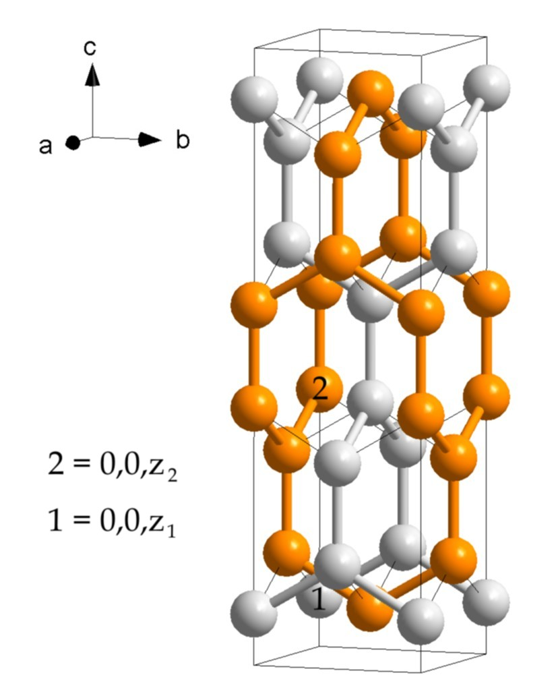
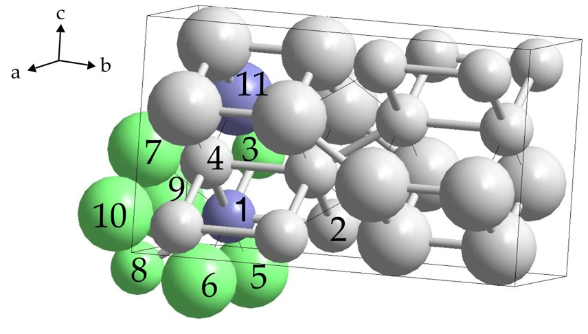
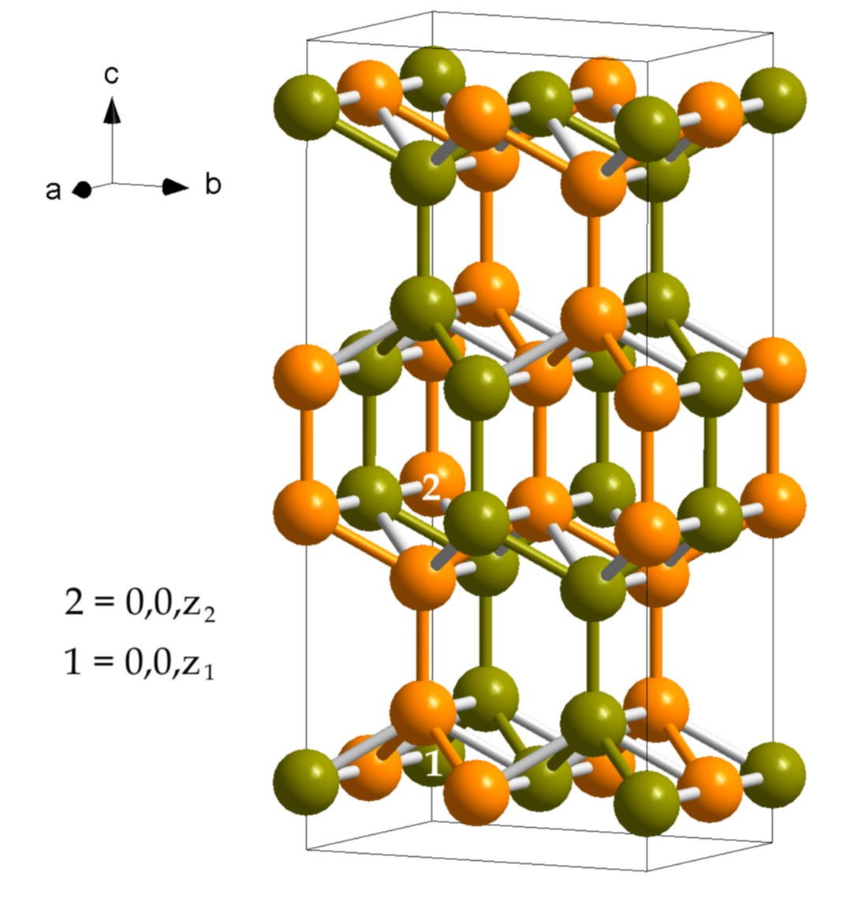

| Home | References |
Packings of Sphere Packings (PSPs) 1. – The concept of packings of sphere packings (PSPs) was introduced for the first time in reference [A22]. The difference between these concatenated structures and conventional interpenetrating nets (such as those of MgCu2, Cu2O or metal-organic frameworks, i.e. MOFs) is that in the latter the two substructures do not establish contact while in PSPs they do – contiguity is a prime requirement. (Otherwise, of course, these structures would not even be plain sphere packings, let alone packings of sphere packings.) 2. – In the following compilation (to be supplemented in time) each packing of sphere packings is referred to as PSP-n, where n are consecutive index numbers. After a brief description, the names (if known, see paragraph 3. below) and appropriate space group settings of the constituent sphere packings, including decimal values of positional parameters, are provided in each case. Thus, the occasionally rather wordy descriptions of the structures may be complemented by drawings easily obtainable by means of crystallography software. If possible, the highest symmetry setting of the resulting PSP is also added. 3. – The names of the constituent sphere packings (nets) and of the resulting PSPs are given (if available) in the following order: Lattice complex symbol (reference [D3]; only the most common symbols have been included), Fischer-Koch-Sowa symbol [D4], RCSR symbol [D5]. – See also PSP-32 for a comment on the last two nomenclatures, as well as the discussion of redundancy below (paragraphs 7. and 8.). 4. – Contributors of PSPs are acknowledged in square brackets at the end of each entry. For the text, however, the present author alone is responsible. 5. – Only packings of homogeneous sphere packings – corresponding to uninodal nets – have been considered so far (all spheres symmetrically equivalent, i.e. only one Wyckoff position occupied, in each constituent packing). Packings of heterogeneous sphere packings (or mixed packings of both kinds of sphere packings) might, however, prove to be of interest as well. 6. – One can also think of packings of more than two sphere packings, or higher-order PSPs. Such do, in fact, exist and examples will be found in the present compilation even though the requirement of contiguity across all of the constituents might not seem to be easy to meet (see paragraphs 8. and 9. for further remarks). 7. – When undertaking a systematic enumeration of sphere packings (which is, after all, what PSPs are) one is confronted with the question of redundancy. Sometimes a sphere packing may be distorted in such a way as to attain a higher symmetry without any change in its connectivity. Does this mean that a different sphere packing is thereby generated? For example, PSP-21 is an eight-connected tetragonal sphere packing of variable c/a ratio. It corresponds to the body-centered tetragonal Bravais lattice. For c/a = 1.1547 it becomes PSP-22, a ten-connected sphere packing, and for c/a = 2 it turns into PSP-23 which is the twelve-connected fcc structure. Obviously, PSP-22 and PSP-23 , due to their changed connectivity, are sphere packings different from PSP-21. For c/a = 1.4142, however, PSP-21 becomes cubic without changing its connectivity – it is now identical with the bcc structure, i.e. a different (higher-symmetry) Bravais lattice. Has it not, therefore, turned into a different sphere packing? Yes, it has (viz. PSP-1), according to the definition adopted by us, which takes changes in symmetry into account. But no, it has not, according to the previously mentioned Fischer-Koch-Sowa nomenclature of types of sphere packings. The latter are topological types (as we shall note again in connection with PSP-32) and each of these types, therefore, has to be redundantly (i.e. using the same symbol) listed under every space group symmetry which it is compatible with. (According to this view one might, of course, retort that it is rather the introduction of PSP-1 besides PSP-21 which is redundant.) 8. – A more subtle issue of redundancy arises from the existence of the afore-mentioned (paragraph 6.) higher-order PSPs. Suppose a ternary PSP, called ABC, consists of sphere packings A, B and C. Then at least two, possibly all, of the three possible pairs AB, BC and AC will also represent PSPs (binary ones). In addition, a combination of, say, AB and C may be interpreted as a binary PSP in its own right (assuming AB is in itself a homogeneous sphere packing). Thus a plethora of PSPs results from what seem to be merely alternative combinations of three simple sphere packings. Should we not, therefore, include only ABC in our compilation and mention all the intermediate combinations under its heading? No, that would not in our view be appropriate, for the aim is a straightforward listing of all known PSPs – whose definition is, we should recall: combinations of simpler sphere packings, and part of these combinations would now be subordinated and concealed behind subheadings. (See also next paragraph). 9. – We may add (paragraph 8.) that so far higher-order PSPs of only the following three types have been discovered: AAA (PSP-17), AAB (PSP-18, -19 and -27) and AAAA (PSP-20). PSP-1: Two Interpenetrating Diamond Nets (NaTl Type) This gives simply the bcc structure (eight-connected). In fact, splitting a simple, comparatively dense packing (here: bcc) into two more open ones (here: diamond type), each with links of the same length as the original packing, is one way of arriving at unrecognized PSPs (though not at new structures). Another example is PSP-35. Further examples are provided by the fcc structure which splits into two crystobalite-anion nets (see PSP-2) or other substructures (see PSP-10, -11, -12 and -18, -19, -20, as well as -23 and -27). Even the simple cubic structure splits into two sphere packings which are closely related to the ThSi2 type (see PSP-8), as does the simple hexagonal one (PSP-34). As the diamond structure is a border type of the Laves net (presented in PSP-3), PSP-1 might also be viewed as consisting of two distorted Laves nets. A remarkable realization of PSP-1 are the binary Zintl phases (NaTl type) of which only seven are known to exist at ambient conditions. Tetragonal variants of this cubic PSP are PSP-21, -22 and -23. Note that no orthorhombic variant of this PSP is possible, for two orthorhombically distorted diamond nets (these are possible) cannot interpenetrate without collisions. Sphere packing A: D, 4/6/c1, dia, Fd-3m (227), 8a, 0 0 0, invariant. Sphere packing B: D, 4/6/c1, dia, Fd-3m (227), 8b, 1/2 1/2 1/2, invariant. Resulting sphere packing: I, 8/4/c1, bcu, Im-3m (229), 2a, 0 0 0, invariant. [Author.] PSP-2: Two Interpenetrating Cristobalite-Anion Nets (PtCu Type) This leads to the fcc structure (twelve-connected). It is another example (see description of PSP-1) of how a simple dense packing (fcc in this case) may be split into two more open ones in order to arrive at a new PSP. PtCu provides an example of this interpenetrating arrangement of two cristobalite nets (ref. [D13], p. 6). For a tetragonally distorted variant see PSP-29 and -30. Sphere packing A: T, 6/3/c2, crs, Fd-3m (227), 16c, 1/8 1/8 1/8, invariant. Sphere packing B: T, 6/3/c2, crs, Fd-3m (227), 16d, 5/8 5/8 5/8, invariant. Resulting sphere packing: F, 12/3/c1, fcu, Fm-3m (225), 4a, 0 0 0, invariant. [Author.] PSP-3: Gamma-Silicon Type This consists of two interpenetrating chiral (enantiomeric in fact) Laves nets (srs) which together make up the lattice complex Y** (srs-c), distorted in such a way as to move each two adjacent atoms on a <111> axis towards each other until they come in contact (best imagined as umbrellas, the one opposite to the other, each formed by a trigonally coordinated atom). The resulting net is four-connected. Sphere packing A: Y* (if x=1/8, invariant), 3/10/c1, srs, I213 (199), 8a, x=0.14643, univariant. Sphere packing B: Y* (if x=7/8, invariant), 3/10/c1, srs, I213 (199), 8a, x=0.85357, univariant. Resulting sphere packing: 4/6/c4, gsi, Ia-3 (206), 16c, x=0.14643, univariant. [Author.] Note: A simple deduction of the chiral Laves net (srs, or lattice complex +/-Y*) and its double, achiral, interpenetrating version (srs-c, or lattice complex Y**) was presented by the author at a recent meeting (see References/About the Author, talk 21.) and is also reproduced here under ref. [C3]. A derivation of the Laves net from the fcc structure is also given in connection with PSP-12 below. Regarding the lattice complexes Y* and Y** see also PSP-36. PSP-4: Thorium Phosphide (Th3P4) Type Again (see PSP-3) this is composed of the two interpenetrating enantiomeric Laves nets (srs, here constituting the phosphorus substructure of Th3P4) but this time both are distorted in the same direction so that each two adjacent atoms on a <111> axis move in tandem until contact is established between them, i.e. until the distance between them becomes equal to that between neighbours in each Laves net (parallel umbrellas configuration, as opposed to PSP-3). The resulting net is five-connected. For the thorium substructure of Th3P4 see PSP-37. Sphere packing A: Y* (if x=1/8, invariant), 3/10/c1, srs, I213 (199), 8a, x=0.0366, univariant. Sphere packing B: Y* (if x=7/8, invariant), 3/10/c1, srs, I213 (199), 8a, x=0.7866, univariant. Resulting sphere packing: 5/5/c1, gan-z, I-43d (220), 16c, x=0.0366, univariant. [Author.] PSP-5: Quasi-Random Sphere Packing, Isopointal with Beta-Manganese – Ideal I-in-RbAg4I5 Type (Chiral) See references [A20] and [A22] for this. The three-connected Laves net (srs, see PSP-3, note) is brought in contact with a different, four-connected net (lcv) deriving from the Laves net simply by placing the nodes at the positions of the links of the latter (thus obtaining what you might call a 3D Kagome net) and then adjusting the free parameter. The resulting PSP is a six-connected net, hence the packing is isostatic (number of constraints, or given equations corresponding to links, matches that of degrees of freedom, or unknowns corresponding to x/y/z-coordinates). As both the radial distribution function and the density (occupied fraction of space) nearly match the corresponding data for random close packings (RCPs), the new packing may properly be called quasirandom (ref. [A22]). It represents the global maximum in a minimal distance map of the beta-manganese structure (referred to as triple point d134 in ref. [D2]). An almost perfect realization is the iodine substructure of the solid state ionic conductor RbAg4I5. For some additional remarks on this structure compare PSP-28. For more on beta-Mn see PSP-36. Sphere packing A: Y* (if x=1/8, invariant), 3/10/c1, srs, P4132 (213), 8c, x=0.03633, univariant. Sphere packing B: V (if y=0, invariant), 4/3/c1, lcv, P4132 (213), 12d, y=0.17706, univariant. Resulting sphere packing: No simpler setting known (heterogeneous sphere packing). [Author & Wolfgang Hornfeck, Cologne/Prague.] PSP-6: Second Packing of Sphere Packings Isopointal with Beta-Manganese (Chiral) Like PSP-5, this is obtained by distorting both the Laves net (srs, see PSP-3, note) and its four-connected congener (lcv, with nodes at positions where links are in the Laves net) so as to bring them in contact. This time, however, in contrast to PSP-5, Hilbert's criterion of stabilty is not met as there are 'rattlers' in the structure. In fact, all of the atoms are 'rattlers', i.e. each atom carries all of the links on one hemisphere. The resulting PSP is six-connected. It was referred to as the triple point d145 in a minimal distance map of the beta-manganese structure in ref. [D2]. For some additional remarks on this structure compare PSP-28 and regarding beta-Mn see also PSP-36. Sphere packing A: Y* (if x=1/8, invariant), 3/10/c1, srs, P4132 (213), 8c, x=0.05261, univariant. Sphere packing B: V (if y=0, invariant), 4/3/c1, lcv, P4132 (213), 12d, y=0.16157, univariant. Resulting sphere packing: No simpler setting known (heterogeneous sphere packing). [Author & Wolfgang Hornfeck, Cologne/Prague.] PSP-7: Two Interpenetrating Univariant ThSi2-Type Nets Like the Laves net (see PSP-3), the related but tetragonal three-connected net of the ThSi2 type (corresponding to the silicon substructure of ThSi2) may be concatenated with its mirror image (in fact self-concatenated, being achiral) even in its ideal form (equal bond lengths and angles). In contrast to the interpenetrating Laves nets, the two substructures (even in their ideal form) have contact now. A five-connected PSP results. (For PSPs related to the thorium substructure of ThSi2 see PSP-21 to -23.) The free parameter z has to be larger than 0.07322 (see PSP-31) and may go up to 0.125 (see PSP-8). The c/a ratio has to be at least equal to 2 (see PSP-8) and 4.8284 at most (see PSP-31) and can be calculated for a given z (see Note). Thus, PSP-8 and PSP-31 represent border types (of extremal values of z and c/a) of PSP-7. For orthorhombic variants of the ThSi2-type see PSP-32, -33, -34 and -35! Sphere packing A: 3/10/t4, ths, I41/amd (141), c/a=3.46410, 8e, z=0.08333, univariant. Sphere packing B: 3/10/t4, ths, I41/amd (141), c/a=3.46410, 8e, z=0.41667, univariant. Resulting sphere packing: 5/4/t6, I4/mmm (139), c/a=2.44949, 4e, z=0.16667, univariant, or ths-c, P42/nnm (134), c/a=2.44949, 4g, z=0.16667, univariant. [Author.] Note: Regarding this PSP (and PSP-8 as well as PSP-31) here is an illustration of how to calculate the values of the free parameter and the c/a ratio. PDF (69 KB) PSP-8: Invariant Case of Interpenetrating ThSi2-Type Nets Analogously to PSP-7, the tetragonal three-connected net of the ThSi2 type, but in the limiting non-ideal configuration (parameter z=1/8 at its maximum value, still planar three-coordination but with one 180° and two 90° angles), may be concatenated with its (actually achiral) mirror image. As in PSP-7, the two substructures have contact. A six-connected PSP results, being none other than the primitive cubic structure. This is a further example (see description of PSP-1) of the splitting of a relatively densely packed simple structure (here: primitive cubic) into two more open ones (here: ThSi2 type) forming a PSP. It may be remarked that the splitting of the primitive cubic lattice in two as done here is a general principal applicable to all equiaxed (a=b=c) lattices regardless of their symmetry. Consider the primitive unit cell of any equiaxed lattice with the eight nodes situated at its vertices. Highlight three contiguous links such that each is parallel to one of the three primitive vector directions of the lattice. Thus a series of four nodes connected by the highlighted links, a tetramer, is created. The four nodes at the remaining vertices of the unit cell form a tetramer of the same kind. (Each of these two tetramers in itself is enantiomorphic, but the chirality is lost upon extension throughout the lattice as described next.) Now, by extending each terminal pair of nodes of each tetramer (connected by a highlighted link) on both sides so as to form a linear chain of nodes interconnected by highlighted links throughout the lattice, two interior T-junctions are created in each tetramer. Next, at the terminal nodes two additional T-junctions may be highlighted, each of opposite orientation to its interior neighbour. By repeating this procedure in all neighbouring cells throughout the lattice, two interpenetrating three-connected nets are obtained. Applying this principle to the primitive (rhombohedral) cell of the fcc lattice one finds that due to additional contacts each of the two (nominally three-connected) nets corresponds to the six-connected cristobalite structure and thus PSP-2 results. For the hexagonal primitive lattice, the two three-connected nets are of orthorhombic symmetry (see PSP-34), as are those (now four-connected due to additional contacts) for the bcc lattice (see PSP-35). The three-connected net forming each of the two substructures of this PSP is the fundamental T-shaped net called 3D-n1 by R. Hoffmann et al. [D6] (a similar case is described under PSP-36). Sphere packing A: 3/10/t4, ths (= ths-z for the given c/a and z), I41/amd (141), c/a=2, 8e, z=1/8, univariant. Sphere packing B: 3/10/t4, ths (= ths-z for the given c/a and z), I41/amd (141), c/a=2, 8e, z=3/8, univariant. Resulting sphere packing: P, 6/4/c1, pcu, Pm-3m (221), 1a, 0 0 0, invariant. [Author.] PSP-9: Two Decorated Interpenetrating ThSi2-Type Nets (Resulting in the ThCr2Si2 Type) Once more following PSP-7, the tetragonal three-connected net of the ThSi2 type, in the non-ideal configuration of PSP-8 (planar three-coordination with one 180° and two 90° angles) may still be concatenated with its (actually achiral) mirror image, even after replacing each node (decorating) by two new ones forming arrays of annulated squares (with the old nodes' positions at their centers) running along <100> directions in {010} planes (the structure may alternatively be regarded as arrays of three-dimensionally interconnected tetrahedra). As in PSP-7 and PSP-8, the two substructures have contact. Thus, a nine-connected PSP results (incidentally, the same sphere packing as in PSP-25 and PSP-31; see the latter for a comment on this three-member series and on the ThCr2Si2 type). Sphere packing A: 5/3/t25, fnl, I41/amd (141), c/a=3.4142, 16h, x=0, y=1/4, z=0.1982, bivariant. Sphere packing B: 5/3/t25, fnl, I41/amd (141), c/a=3.4142, 16h, x=0.5, y=3/4, z=0.1982, bivariant. Resulting sphere packing: 9/3/t2, nce, I4/mmm (139), c/a=3.41421, 4e, z=0.14645, univariant. [Author.] PSP-10: Two Interpenetrating Arrays of Parallel Rods of Edge-Connected Tetrahedra The rationale behind each of the two substructures of this PSP – which, like PSP-2, -11, -12 and others, is in fact identical to the basic 12-connected fcc structure – is best compared to the rationale behind the cristobalite networks of PSP-2. Each cristobalite network derives from the fcc arrangement by removing, in a diamond-like pattern, one half of the tetrahedra from a 2x2x2 fcc supercell centered on a tetrahedral void. By contrast, we now remove from that fcc supercell one complete central channel of edge-connected tetrahedra. The symmetry is then tetragonal. The remaining rods of edge-connected tetrahedra, which constitute each of the two substructures of this PSP, are oriented in parallel to the c-axis, arranged in a checkerboard fashion and mutually interconnected by <110>-links (shortest distances). This shows yet again (see description of PSP-1) how a new PSP may be obtained by decomposing a simple dense packing (fcc) into two more open ones. It is much easier to envision sphere packing A and sphere packing B as made up of two interpenetrating Laves nets, as shown in PSP-15. This is the first member of a group of eleven PSP's with the Laves net as a common substructure (see PSP-20). Sphere packing A: 6/3/t5, snp, srs-c*, P42/mmc (131), c/a=0.7071, 4j, x=1/4, univariant. Sphere packing B: 6/3/t5, snp, srs-c*, P42/mmc (131), c/a=0.7071, 4m, x=3/4 univariant. Resulting sphere packing: F, 12/3/c1, fcu, srs-c4, srs-c4*, Fm-3m (225), 4a, 0 0 0, invariant. [Author.] PSP-11: Interwoven Fabric of Two Networks of Pairwise Triply-Interconnected Tetrahedra This, like PSP-2, -10, -12 and others, results in the basic fcc structure, providing another example of a PSP discovered by dividing a dense packing (fcc) into two more open ones (compare PSP-1 and other examples referred to there). In the case of PSP-2, four tetrahedra were removed, in a diamond-like fashion, from the 2x2x2 fcc supercell centered on a tetrahedron in order to obtain each of the two partial nets. Similarly, in the case of PSP-10, the central row of tetrahedra was removed. Now, each of the two substructures of PSP-11 is obtained by systematically removing two nodes from each of the eight tetrahedra centered in the eight octants of the supercell such that the remaining nodes still form a contiguous network and the tetrahedron at the supercell's center stays intact. This central tetrahedron is then found to be connected laterally via three links each to four neighbouring tetrahedra displaced by 1/4 up or down along the c axis of the resulting tetragonal cell. The partial net thus obtained is six-connected. Just as in the case of PSP-10, here again each of the two constituting sphere packings A and B is much easier envisioned as consisting of two interwoven Laves nets, as described in PSP-16. This is the second member of a group of eleven PSP's with the Laves net as a common substructure (see PSP-20). Sphere packing A: 6/3/t40, whx, I41/a (88), c/a=1, 16f, x=1/8, y=1/8, z=1/8, trivariant. Sphere packing B: 6/3/t40, whx, I41/a (88), c/a=1, 16f, x=5/8, y=5/8, z=1/8, trivariant. Resulting sphere packing: F, 12/3/c1, fcu, srs-c4, srs-c4*, Fm-3m (225), 4a, 0 0 0, invariant. [Author.] PSP-12: fcc Less a Laves Net – Combined with a Laves Net Consider the fcc structure as a simple cubic arrangement of edge-sharing (in all three directions) regular tetrahedra. Looking along a cubic axis you will note the laterally fused (edge-sharing) parallel arrays of tetrahedra. Mark every other array from left to right and from top to bottom. Then, the marked arrays are not fused but merely laterally interconnected, forming a simple quadratic mesh (the interconnections are, in fact, the edges of the tetrahedra constituting the intervening unmarked arrays). Now, on this quadratic mesh of parallel arrays of tetrahedra, select half of the arrays in a checkerboard fashion and from each of them remove half of the spheres (corners) in a screw-like manner. Actually, the spheres thus removed (sphere packing A) constitute the chiral Laves net in its ideal (most symmetrical) form! (Also see PSP-3 regarding the Laves net.) The remaining spheres make up a rather more complex, chiral nine-connected net (sphere packing B). The resulting PSP, therefore, is nothing but the fcc structure. Once again (see PSP-1 and other examples mentioned there), the decomposition of a basic close packed structure (fcc) in two less densly packed ones has led to the discovery of a new PSP. A. F. Wells (ref. [D8], p.86 f.) noted, though not considering PSPs, that sphere packing B corresponds to a single Laves net build not from individual atoms but from regular octahedra each of which shares three of its edges with the three neighbours. The same sphere packing is also obtained as PSP-13, -14, -17 and -26. This is the third member of a group of eleven PSP's with the Laves net as a common substructure (see PSP-20). Sphere packing A: Y*, 3/10/c1, srs, I4132 (214), 8a, 1/8 1/8 1/8 , invariant. Sphere packing B: 9/3/c1, nca, srs-c3, I4132 (214), 24h, y=3/8, univariant. Resulting sphere packing: F, 12/3/c1, fcu, srs-c4, srs-c4*, Fm-3m (225), 4a, 0 0 0, invariant. [Author.] PSP-13: Array of Parallel Rods of Edge-Connected Tetrahedra Combined with a Laves Net – Ideal Ca-in-Ca3PI3 Type (Chiral) Instead of combining the substructure of PSP-10 (parallel rods of edge-connected tetrahedra) with itself it may be combined with the simple Laves net. (Also see PSP-3 regarding the Laves net.) The resulting nine-connected sphere packing, or PSP, is, in fact, the one which was again combined with the Laves net in PSP-12. Also see PSP-12 for an interesting observation by A. F. Wells regarding this sphere packing. According to ref. [D13], p. 6, the calcium atoms in Ca3PI3 provide an example of a deformed version of this structure. This is the fourth member of a group of eleven PSP's with the Laves net as a common substructure (see PSP-20). Sphere packing A: 6/3/t5, snp, srs-c*, I4122 (98), c/a=1, 16g, x=7/8, y=3/8, z=0, univariant (trivariant setting). Sphere packing B: Y*, 3/10/c1, srs, I4122 (98), c/a=1, 8d, x=1/8, invariant (univariant setting). Resulting sphere packing: 9/3/c1, nca, srs-c3, I4132 (214), 24h, y=3/8, univariant. [Author.] PSP-14: Network of Pairwise Triply Interconnected Tetrahedra Combined with a Laves Net – Ideal Ca-in-Ca3PI3 Type (Chiral) Instead of combining the substructure of PSP-11 (pairwise triply interconnected tetrahedra) with itself it may, as in the case of PSP-13, be combined with the simple Laves net. (Also see PSP-3 regarding the Laves net.) The resulting nine-connected sphere packing, or PSP, is, in fact – again as in the case of PSP-13 –, the one which was once more combined with the Laves net in PSP-12. See PSP-12 for an interesting observation by A. F. Wells regarding this sphere packing. A non-ideal realization of this structure is found in the calcium arrangement of Ca3PI3 (ref. [D13], p. 6). This is the fifth member of a group of eleven PSP's with the Laves net as a common substructure (see PSP-20). Sphere packing A: 6/3/t40, whx, I41 (80), c/a=1, 8b, x=1/8, y=1/8, z=1/8, and 8b, x=5/8, y=1/8, z=1/8 trivariant (double position setting). Sphere packing B: Y*, 3/10/c1, srs, I41 (80), c/a=1, 8b, x=5/8, y=5/8, z=1/8, invariant (trivariant setting). Resulting sphere packing: 9/3/c1, nca, srs-c3, I4132 (214), 24h, y=3/8, univariant. [Author.] PSP-15: Two Laves Nets Combined Forming an Array of Parallel Rods of Edge-Connected Tetrahedra The substructure of PSP-10 (array of parallel rods of edge-connected tetrahedra) may be obtained by self-concatenation of the simple Laves net (also see PSP-3 regarding the Laves net). It is a six-connected PSP. This is the sixth member of a group of eleven PSP's with the Laves net as a common substructure (see PSP-20). Sphere packing A: Y*, 3/10/c1, srs, I41 (80), c/a=1, 8b, x=1/8, y=1/8, z=1/8, invariant (trivariant setting). Sphere packing B: Y*, 3/10/c1, srs, I41 (80), c/a=1, 8b, x=5/8, y=5/8, z=1/8, invariant (trivariant setting). Resulting sphere packing: 6/3/t5, snp, srs-c*, P42/mmc (131), c/a=0.7071, 4j, x=1/4, univariant. [Author.] PSP-16: Two Laves Nets Combined Forming a Network of Pairwise Triply Interconnected Tetrahedra The substructure of PSP-11 (network of pairwise triply interconnected tetrahedra) may also, as in the similar case of PSP-15, be obtained by self-concatenation of the simple Laves net (also see PSP-3 regarding the Laves net). It is a six-connected PSP. This is the seventh member of a group of eleven PSP's with the Laves net as a common substructure (see PSP-20). Sphere packing A: Y*, 3/10/c1, srs, I41 (80), c/a=1, 8b, x=1/8, y=1/8, z=1/8, invariant (trivariant setting). Sphere packing B: Y*, 3/10/c1, srs, I41 (80), c/a=1, 8b, x=5/8, y=1/8, z=1/8, invariant (trivariant setting). Resulting sphere packing: 6/3/t40, whx, I41/a (88), c/a=1, 16f, x=1/8, y=1/8, z=1/8, trivariant. [Author.] PSP-17: Three Laves Nets Combined forming a Cubic Nine-Connected Net – Ideal Ca-in-Ca3PI3 Type (Chiral) The simple Laves net (see also PSP-3 regarding this) may be self-concatenated in a triplet. This is the first example of a higher-order PSP, i.e. a PSP made up of more than two constituent sphere packings (three in this case). The resulting nine-connected sphere packing, or PSP, is once again the one which was combined with the Laves net in PSP-12. Also see PSP-12 for an interesting observation by A. F. Wells regarding this sphere packing. A deformed version of this structure occurs in Ca3PI3 (calcium substructure), see ref. [D13], p. 6. This is the eighth member of a group of eleven PSP's with the Laves net as a common substructure (see PSP-20). Sphere packing A: Y*, 3/10/c1, srs, I41 (80), c/a=1, 8b, x=1/8, y=1/8, z=1/8, invariant (trivariant setting). Sphere packing B: Y*, 3/10/c1, srs, I41 (80), c/a=1, 8b, x=5/8, y=1/8, z=1/8, invariant (trivariant setting). Sphere packing C: Y*, 3/10/c1, srs, I41 (80), c/a=1, 8b, x=5/8, y=5/8, z=1/8, invariant (trivariant setting). Resulting sphere packing: 9/3/c1, nca, srs-c3, I4132 (214), 24h, y=3/8, univariant. [Author.] PSP-18: Array of Parallel Rods of Edge-Connected Tetrahedra Combined with Two Laves Nets Instead of combining one of the substructures of PSP-13 (viz. the parallel rods of edge-connected tetrahedra) with a single Laves net it may be combined with two Laves nets. (Also see PSP-3 regarding the Laves net.) The resulting twelve-connected sphere packing, an higher-order PSP (consisting of three sphere packings), is, yet again, the fcc structure – a further instance of subdividing the densely packed fcc arrangement in order to discover new PSPs (other examples are refered to in connection with PSP-1). This is the ninth member of a group of eleven PSP's with the Laves net as a common substructure (see PSP-20). Sphere packing A: 6/3/t5, snp, srs-c*, I4122 (98), c/a=1, 16g, x=7/8, y=3/8, z=0, univariant (trivariant setting). Sphere packing B: Y*, 3/10/c1, srs, I4122 (98), c/a=1, 8d, x=1/8, invariant (univariant setting). Sphere packing C: Y*, 3/10/c1, srs, I4122 (98), c/a=1, 8d, x=3/8, invariant (univariant setting). Resulting sphere packing: F, 12/3/c1, fcu, srs-c4, srs-c4*, Fm-3m (225), 4a, 0 0 0, invariant. [Author.] PSP-19: Network of Pairwise Triply Interconnected Tetrahedra Combined with Two Laves Nets Instead of combining the major substructure of PSP-14 (viz. the pairwise triply interconnected tetrahedra) with a single Laves net it may, as in the case of PSP-18, be combined with two Laves nets. (For the Laves net see also PSP-3.) The higher-order PSP (ternary) thus obtained is – again as in the case of PSP-18 – simply the closely packed fcc structure whose subdivision into more open arrangements has thus served as a means to uncover a new PSP (further exemplifying the principle mentioned in connection with PSP-1). This is the tenth member of a group of eleven PSP's with the Laves net as a common substructure (see PSP-20). Sphere packing A: 6/3/t40, whx, I41 (80), c/a=1, 8b, x=1/8, y=1/8, z=1/8, and 8b, x=5/8, y=1/8, z=1/8 trivariant (double position setting). Sphere packing B: Y*, 3/10/c1, srs, I41 (80), c/a=1, 8b, x=5/8, y=5/8, z=1/8, invariant (trivariant setting). Sphere packing C: Y*, 3/10/c1, srs, I41 (80), c/a=1, 8b, x=1/8, y=5/8, z=1/8, invariant (trivariant setting). Resulting sphere packing: F, 12/3/c1, fcu, srs-c4, srs-c4*, Fm-3m (225), 4a, 0 0 0, invariant. [Author.] PSP-20: Four Laves Nets Combined The simple Laves net (regarding this see also PSP-3) may be self-concatenated in a quadruplet. This is the first example of a PSP made up of four constituent sphere packings. The result, therefore, is a quaternary higher-order PSP, a twelve-connected one which, once again, is none other than the basic fcc structure. And again, the decomposition of the most dense fcc structure into more open packings (four this time) has revealed a new PSP (see further examples mentioned in connection with PSP-1). This is the end-member of a series of eleven PSPs (PSP-10 to -20) all of which ultimately consist exclusively of two to four intertwined undistorted Laves nets! (In contrast, PSP-3 and -4 consist of distorted Laves nets.) Sphere packing A: Y*, 3/10/c1, srs, I41 (80), c/a=1, 8b, x=1/8, y=1/8, z=1/8, invariant (trivariant setting). Sphere packing B: Y*, 3/10/c1, srs, I41 (80), c/a=1, 8b, x=5/8, y=1/8, z=1/8, invariant (trivariant setting). Sphere packing C: Y*, 3/10/c1, srs, I41 (80), c/a=1, 8b, x=5/8, y=5/8, z=1/8, invariant (trivariant setting). Sphere packing D: Y*, 3/10/c1, srs, I41 (80), c/a=1, 8b, x=1/8, y=5/8, z=1/8, invariant (trivariant setting). Resulting sphere packing: F, 12/3/c1, fcu, srs-c4, srs-c4*, Fm-3m (225), 4a, 0 0 0, invariant. [Author.] PSP-21: Two Interpenetrating Tetragonally Distorted Diamond Nets – Variable Degree of Distortion Similarly to PSP-1, combining two elongated or compressed (tetragonal) diamond nets leads to an eight-connected PSP, a tetragonally distorted bcc structure, i.e. the body-centered tetragonal Bravais lattice. Each of the two substructures A and B corresponds to a distorted (compressed along the c axis) arrangement of thorium atoms in ThSi2 for which c/a=3.464 while it is less than or equal to 2 here (the maximally distorted variants, of different connectivity, are PSP-22 and PSP-23, representing the lower and upper end of the c/a range respectively). Sphere packing A: vD, 4/6/t2 (D, 4/6/c1, dia, if c/a=1.4142), I41/amd (141), c/a=variable, 4a, 0 0 0, invariant. Sphere packing B: vD, 4/6/t2 (D, 4/6/c1, dia, if c/a=1.4142), I41/amd (141), c/a=variable, 4b, 0 0 1/2, invariant. Resulting sphere packing: 8/4/t1 (8/4/c1, bcu, if c/a=1), I4/mmm (139), c/a=variable, 2a, 0 0 0, invariant. [Author.] PSP-22: Two Interpenetrating Tetragonally Distorted Diamond Nets – Maximally Compressed Compressing PSP-21 along the c axis up to the point where the next-nearest neighbours touch leads to a ten-connected PSP. The opposite extreme – that of maximum elongation – is represented by PSP-23. Sphere packing A: vD, 4/6/t2 (D, 4/6/c1, dia, if c/a=1.4142), I41/amd (141), c/a=1.1547, 4a, 0 0 0, invariant. Sphere packing B: vD, 4/6/t2 (D, 4/6/c1, dia, if c/a=1.4142), I41/amd (141), c/a=1.1547, 4b, 0 0 1/2, invariant. Resulting sphere packing: 10/3/t1, bct, I4/mmm (139), c/a=0.8165, 2a, 0 0 0, invariant. [Author.] PSP-23: Two Interpenetrating Tetragonally Distorted Diamond Nets – Maximally Elongated Elongating PSP-21 along the c axis up to the point where the transversely situated next-nearest neighbours touch leads to a twelve-connected PSP which is none other than the fcc structure. (One may recall the latter's well known body-centered tetragonal setting.) This is yet another case of a splitting of the densely packed fcc structure into two more open ones (other cases were referred to in connection with PSP-1). For the opposite extreme – that of maximum compression along the c axis – see PSP-22. Sphere packing A: vD, 4/6/t2 (D, 4/6/c1, dia, if c/a=1.4142), I41/amd (141), c/a=2, 4a, 0 0 0, invariant. Sphere packing B: vD, 4/6/t2 (D, 4/6/c1, dia, if c/a=1.4142), I41/amd (141), c/a=2, 4b, 0 0 1/2, invariant. Resulting sphere packing: F, 12/3/c1, fcu, Fm-3m (225), 4a, 0 0 0, invariant. [Author.] PSP-24: Two Interpenetrating Orthorhombic Four-Connected Nets of the Cu-in-CeCu2 Type – With a Free Parameter Due to their open structure, four-connected 3D nets in general are expected to be amenable to selfconcatenation, as is observed for the cubic diamond net (PSP-1) as well as its tetragonally distorted variant (PSP-21, -22 and -23). It turns out that even an orthorhombic symmetry is compatible with the requirements for the formation of a PSP. Thus, here a seven-connected orthorhombic PSP is obtained from two four-connected sphere packings of the type adopted by Cu in the CeCu2 structure. (Interest in the latter was stimulated by J. Evers and R. Hoffmann et al. in 1996 [D7].) Not only is the formation of a PSP not precluded by the lower symmetry of the orthorhombic system, as compared to the tetragonal or cubic case, but a parameter remains free as well. For the latter it is convenient to take the y parameter of the constituent sphere packings A and B (whose x and z parameters remain fixed by the required symmetry). Four equations may be written down (see Note below) relating the lattice parameters a, b, c and the free parameter y to the various nearest-neighbour bond lengths dn (n=1-9). Of these nine d values four, two and two respectively are identical due to symmetry, hence four equations (corresponding to the four groups of d values) suffice to uniquely determine the system. Furthermore, the last pair of d values may be relaxed (d>1) without loss of connectivity in the remaining PSP, this being seven-connected then. Thus, only three out of the four equations are needed to calculate, given a value of y and a bond length d=1, say, the required a, b and c. If, however, one extends the restriction d=1 to the last pair of d values as well (by also utilizing the fourth equation), then the result will be a nine-connected packing (see PSP-25). Sphere packing A: 4/4/o1, sra, Pnma (62), a/b=0.43426, c/b=0.72521, 8d, x=0, y=0.10860, z=1/8, bivariant (trivariant setting). Sphere packing B: 4/4/o1, sra, Pnma (62), a/b=0.43426, c/b=0.72521, 8d, x=0, y=0.10860, z=5/8, bivariant (trivariant setting). Resulting sphere packing: 7/4/o1, sev, Fmmm (69), a/b=2.75781, c/b=1.19760, 8g, x=0.14144, univariant. [Author.] Note: Regarding PSP-24 (and PSP-25) here is an illustration of how to calculate the values of the free parameter and the lattice parameters (in German). PDF (112 KB) Note 2: The CeCu2 structure type is sometimes called the KHg2 type or SrAl2 type (hence the acronym sra for sphere packings A and B). PSP-25: Two Interpenetrating Orthorhombic Four-Connected Nets of the Cu-in-CeCu2 Type – Invariant (Resulting in the ThCr2Si2 Type) The rationale behind this PSP is explained in connection with PSP-24! As it happens, the resulting nine-connected sphere packing is the same as in PSP-9 (and PSP-31; see this for a comment on the significance of the three-member series and the ThCr2Si2 type). Sphere packing A: 4/4/o1, sra, Pnma (62), a/b=0.41421, c/b=0.82843, 8d, x=0, y=0.10355, z=1/8, bivariant (trivariant setting). Sphere packing B: 4/4/o1, sra, Pnma (62), a/b=0.41421, c/b=0.82843, 8d, x=0, y=0.10355, z=5/8, bivariant (trivariant setting). Resulting sphere packing: 9/3/t2, nce, I4/mmm (139), c/a=3.41421, 4e, z=0.14645, univariant. [Author.] PSP-26: Two Interpenetrating Four-Connected Nets of a Defect Cristobalite-Anion Type (Chiral) The invariant cubic lattice complex V, if embedded in an univariant cubic setting, may be distorted so as to form a defect cristobalite-type structure (an example of the defect-free cristobalite type is the Cu substructure of MgCu2) in which one atom is missing from each of the four tetrahedra in the cubic unit cell. Like V itself, this is still an enantiomorphic four-connected net. In analogy to the cristobalite net, which selfconcatenates to form the fcc structure (PSP-2), this one concatenates with a second exemplar of the same kind (and of the same hand) forming a defect fcc structure from which one fourth of the atoms is missing. These missing atoms represent a Laves net and the resulting structure, therefore, is identical to PSP-13, -14 and -17. Also see PSP-12 for an interesting observation by A. F. Wells regarding this sphere packing. Sphere packing A: V (if y=0, invariant), 4/3/c1, lcv, P4132 (213), 12d, y=1/8, univariant. Sphere packing B: V (if y=0, invariant), 4/3/c1, lcv, P4132 (213), 12d, y=7/8, univariant. Resulting sphere packing: 9/3/c1, nca, srs-c3, I4132 (214), 24h, y=3/8, univariant. [Author.] PSP-27: Two Interpenetrating Four-Connected Nets of a Defect Cristobalite-Anion Type Combined with a Laves Net The invariant cubic lattice complex V, distorted and selfconcatenated as in PSP-26, may be combined with a Laves net to form the fcc structure. Thus, we have here a ternary higher-order PSP. While two of the constituent nets are identical (the two V-derived defect cristobalite type ones) the third is different (the Laves net). Furthermore, the constituent nets cannot be decomposed in such a manner as to form identical nets, in contrast to, for instance, PSP-18 and -19. This is, therefore, the first example of a higher-order PSP whose composition is what one may call irreducibly heterogeneous. Once again also, it represents a case where a new PSP has been discovered by decomposing a densely packed arrangement of spheres (the fcc structure) into several (three) less densely packed ones, as explained in connection with PSP-1. Sphere packing A: V (if y=0, invariant), 4/3/c1, lcv, P4132 (213), 12d, y=1/8, univariant. Sphere packing B: V (if y=0, invariant), 4/3/c1, lcv, P4132 (213), 12d, y=7/8, univariant. Sphere packing C: Y*, 3/10/c1, srs, P4132 (213), 4a, 3/8, 3/8, 3/8, and 4b, 7/8, 7/8, 7/8, invariant (double position setting). Resulting sphere packing: F, 12/3/c1, fcu, Fm-3m (225), 4a, 0 0 0, invariant. [Author.] PSP-28: A Defect Cristobalite-Anion Type Net Combined with a Laves Net – New Heterogeneous Sphere Packing Related to Beta-Manganese (Chiral) The invariant cubic lattice complex V, distorted as in PSP-26 to form a defect cristobalite type net (enantiomorphic), may be combined with a Laves net (also enantiomorphic, see PSP-3, Note) of opposite hand. Formally, this is the same combination as in PSP-5 and -6 (both isopointal with beta-manganese) but in the latter the two substructures are of the same hand (thus, in the undistorted form they bear the same relation to each other as the 2D Kagome and graphene nets do). In PSP-5 each vertex of the four-coordinated V net touches two atoms of the Laves net, and in turn each vertex of the three-coordinated Laves net touches three atoms of the V net, six-coordination being thereby established for both substructures. Now, in contrast, every vertex of the V net touches in addition a third atom of the Laves net, which makes the V net seven-coordinated while of the Laves net half of the atoms are nine- instead of six-coordinated since they touch two complete triangles of the V net (between which they are sandwiched) instead of touching only three separate atoms of the latter as the other half of the atoms of the Laves net does. These latter atoms, whose six-coordination consists of a plane regular hexagon, are 'rattlers' and the new structure is, therefore, unstable according to Hilbert's criterion (compare PSP-6). As there are 12 V net atoms and 8 Laves net atoms per unit cell, the average coordination is (12x7+4x6+4x9) / 20 = 7.2. Obviously, the new structure thus consists of three types of symmetrically distinct atoms, as opposed to only two in beta-manganese. Even though two nets of opposite hand have been combined, the structure is still enantiomorphic, since the atoms in one net outnumber those in the other. Sphere packing A: V (if y=0, invariant), 4/3/c1, lcv, P4132 (213), 12d, y=1/8, univariant. Sphere packing B: Y*, 3/10/c1, srs, P4132 (213), 4a, 3/8, 3/8, 3/8, and 4b, 7/8, 7/8, 7/8, invariant (double position setting). Resulting sphere packing: No simpler setting known (heterogeneous sphere packing). [Author.] PSP-29: Two Interpenetrating Tetragonally Distorted Cristobalite-Anion Nets – Variable Degree of Distortion By compressing the structure of PSP-2 along one of the cubic axes the two transverse bonds (out of six in all) of each tetrahedron are disrupted because the remaining four bonds are shortened. Thus, two four-connected sphere packings instead of two six-connected ones are obtained, forming an eight-connected PSP. The c/a ratio is now variable. At the upper limit (c/a = 1.4142) the structure is identical to that of PSP-2. At the lower limit (c/a = 0.8172) the 10-connected structure of PSP-30 results. The difference between this PSP and PSP-30 on the one hand and PSP-21, -22 and -23 on the other is that the coordination sphere of each atom is now less symmetrical: the four nearest neighbours of each kind are no longer placed on the corners of the tetragonal coordination prism in a tetrahedral arrangement but rather in a diagonal plane. Sphere packing A: vT, 4/4/t1, lvt (T, 6/3/t3, 6/3/c2, crs, if c/a=1.4142), I41/amd (141), c/a=variable, 8c, x=0, y=1/4, z=1/8, invariant. Sphere packing B: vT, 4/4/t1, lvt (T, 6/3/t3, 6/3/c2, crs, if c/a=1.4142), I41/amd (141), c/a=variable, 8d, x=0, y=1/4, z=5/8, invariant. Resulting sphere packing: 8/4/t1 (8/4/c1, bcu, if c/a=1), I4/mmm (139), c/a=variable, 2a, 0 0 0, invariant. [Author.] PSP-30: Two Interpenetrating Tetragonally Distorted Cristobalite-Anion Nets – Maximally Compressed As described under PSP-29 (where the difference in the type of coordination as compared to PSP-21, -22 and -23 is also pointed out), at the lower limit of the range of permissible c/a ratios (c/a = 0.8172) the 10-connected structure of this PSP results. Sphere packing A: vT, 4/4/t1, lvt (T, 6/3/t3, 6/3/c2, crs, if c/a=1.4142), I41/amd (141), c/a=0.8172, 8c, x=0, y=1/4, z=1/8, invariant. Sphere packing B: vT, 4/4/t1, lvt (T, 6/3/t3, 6/3/c2, crs, if c/a=1.4142), I41/amd (141), c/a=0.8172, 8d, x=0, y=1/4, z=5/8, invariant. Resulting sphere packing: 10/3/t1, bct, I4/mmm (139), c/a=0.8165, 2a, 0 0 0, invariant. [Author.] PSP-31: Another Case of Two Interpenetrating Nets of the Si-in-ThSi2 Type – Maximally Elongated (Resulting in the ThCr2Si2 Type) Like PSP-7 and PSP-8 (see the former for a Note on how to calculate the free parameter z and the c/a ratio) this structure represents a case of two interpenetrating ThSi2-type nets in a non-ideal configuration (bond angles at each node 1x90° and 2x135° instead of 3x120°). The resulting sphere packing is a nine-connected one, the same as in PSP-9 (and PSP-25). It is of interest that with this PSP a special three-member series has been completed, in so far as it is now possible to build the nine-connected structure (9/3/t2, or nce) from a pair of interpenetrating three- (this PSP), four- (PSP-25) or five- (PSP-9) connected sphere packings. This variability may be related to the fact that the nine-connected structure forms the backbone of the most abundant type of ternary inorganic compounds, viz. that of ThCr2Si2. Therein, the Si atoms correspond to the present PSP while the Th and Cr atoms occupy the structure's quadratic prismatic and tetrahedral voids respectively. The ThCr2Si2 type is also sometimes referred to Th2TeN2 (wherein Th takes the place of Si) or BaAl4 (see ref. [D10], page 252 f.). Sphere packing A: 3/10/t4, ths, I41/amd (141), c/a=4.82843, 8e, z=0.07322, univariant. Sphere packing B: 3/10/t4, ths, I41/amd (141), c/a=4.82843, 8e, z=0.42678, univariant. Resulting sphere packing: 9/3/t2, nce, I4/mmm (139), c/a=3.41421, 4e, z=0.14645, univariant. [Author.] PSP-32: Two Interpenetrating Orthorhombically Distorted Nets of the Si-in-ThSi2 Type – Five-Connected Similarly to PSP-7, PSP-8 and PSP-31 this structure represents a case of two interpenetrating ThSi2-type nets in a non-ideal configuration. Now the symmetry is orthorhombic instead of tetragonal. Thus, the alternating zig-zag chains of silicon atoms of the ThSi2 structure – embodied here by each of the two interpenetrating motifs – are no longer orthogonal with respect to each other. The resulting composite sphere packing, or PSP, is five-connected. The free parameter z (sphere packing A; that of sphere packing B is given by 0.5-z) may take values in the range 0.07322 - 0.125 as explained in the Note below. Note that the sphere packings below are by convention designated as tetragonal (3/10/t4 and 5/4/t6) even though they are, in fact, of orthorhombic symmetry. They become, of course, pseudo-tetragonal if a/b=1 or c/b=1. Werner Fischer's nomenclature for homogeneous sphere packings was originally devised in connection with tetragonal sphere packings. Only later on did he realize that some types may also be found, for example, with cubic symmetry (as he remarked in reference [D9]). From then on, the symbols have been meant to give only the highest possible symmetry and not necessarily the possibly lower one which a sphere packing of the same type might also adopt. Sphere packing types according to Fischer's symbols (just as the three-letter RCSR symbols) are, therefore, merely topological types whose embedding may vary. Sphere packing A: 3/10/t4 (orthorhombic setting), ths, Fddd (70), a/b=1, c/b=2, 16g, z=0.09375, univariant. Sphere packing B: 3/10/t4 (orthorhombic setting), ths, Fddd (70), a/b=1, c/b=2, 16g, z=0.40625, univariant. Resulting sphere packing: 5/4/t6 (orthorhombic setting), sqp, Immm (71), a/b=2, c/b=1, 4e, x=0.1875, univariant. [Author.] Note: Here is an outline of the calculation of the free parameter and the unit cell dimensions. PDF (134 KB) PSP-33: Two Interpenetrating Orthorhombically Distorted Nets of the Si-in-ThSi2 Type – Seven-Connected For certain combinations of the free parameter and the lattice parameters PSP-32 becomes seven-connected. (See the latter for a Note on how to calculate the parameters.) The present PSP is thus established. Again (as with PSP-32) the constituting sphere packings, though of orthorhombic symmetry, are by convention designated as tetragonal (3/10/t4). Sphere packing A: 3/10/t4 (orthorhombic setting), ths, Fddd (70), a/b=0.65612, c/b=1.85224, 16g, z=0.08856, univariant. Sphere packing B: 3/10/t4 (orthorhombic setting), ths, Fddd (70), a/b=0.65612, c/b=1.85224, 16g, z=0.41144, univariant. Resulting sphere packing: 7/3/o5, ose, Immm (71), a/b=2.8230, c/b=1.5241, 4e, x=0.17712, univariant. [Author.] PSP-34: Two Interpenetrating Orthorhombically Distorted Nets of the Si-in-ThSi2 Type – Eight-Connected Hexagonal For certain combinations of the free parameter and the lattice parameters PSP-32 becomes eight-connected. In fact, it then corresponds to the primitive hexagonal lattice. (See the Note under PSP-32 on how to calculate the parameters.) Thus the present PSP is obtained, yet another example for the principle of splitting relatively dense simple packings (here primitive hexagonal) into more loosely packed ones in order to arrive at new PSPs as described under PSP-1. In fact, we have here taken advantage of the possibility of splitting any equiaxed lattice, or its primitive unit cell, into two interpenetrating three-connected nets as described under PSP-8. Again (as with PSP-32) the constituting sphere packings, though of orthorhombic symmetry, are by convention designated as tetragonal (3/10/t4). Sphere packing A: 3/10/t4 (orthorhombic setting), ths, Fddd (70), a/b=0.57735, c/b=1.15470, 16g, z=0.125, univariant. Sphere packing B: 3/10/t4 (orthorhombic setting), ths, Fddd (70), a/b=0.57735, c/b=1.15470, 16g, z=0.375, univariant. Resulting sphere packing: P, 8/3/h4, hex, P6/mmm (191), c/a=1, 1a, 0 0 0, invariant. [Author.] PSP-35: Two Interpenetrating Orthorhombically Distorted Nets of the Si-in-ThSi2 Type – Eight-Connected Cubic In contrast to PSP-32, -33 and -34 (as well as PSP-7, -8 and -31) the ThSi2 net may be orthorhombically distorted in such a way that the two zigzag chains (in fact straight chains in the present case) not only do not form a right angle with respect to each other but furthermore establish unsymmetrical (branching at an angle other than 90°) T-junctions. Two such nets interpenetrate to form the present eight-connected PSP which is none other than the bcc lattice. Thus yet another example is provided for the splitting of a simple dense sphere packing (bcc) into two more open ones as indicated in connection with PSP-1. In particular, the principle of splitting an equiaxed lattice in two has been applied as described in detail under PSP-8. Sphere packing A: 4/4/o2, irl, Cccm (66), a/b=0.70711, c/b=0.5, 8l, x=0.125, y=0.125, bivariant. Sphere packing B: 4/4/o2, irl, Cccm (66), a/b=0.70711, c/b=0.5, 8l, x=0.875, y=0.375, bivariant. Resulting sphere packing: I, 8/4/c1, bcu, Im-3m (229), 2a, 0 0 0, invariant. [Author.] PSP-36: Two Interpenetrating Enantiomeric Cubic Three-connected T-Shaped Nets (Resulting in the NbO Type) Besides the Laves net (see PSP-3 with Note, PSP-4 and PSP-10 through -20) and the ThSi2-type net (see PSP-7, -8 and -31 through -35), here is another three-connected structure (sphere packing A) which may be self-concatenated (actually concatenated with its mirror image B). As in PSP-8, the coordination figure of the constituent sphere packings A and B at each point is T-shaped (trigonal-planar with one 180° and two 90° angles). The PSP thus obtained corresponds to the NbO type. To rationalize this PSP one can think of the CaF2 type: the fluorine atoms form a primitive cubic (pc) lattice, the Ca atoms a fcc one. The sphere packings A and B (both before and after concatenation) represent a defect type pc structure and thus may occupy part of the fluorine positions of CaF2. At the same time, the atoms of A or B form cross-linked linear strings, or rods, which exactly follow the arrangement of the helical cross-linked channels of the Laves net, or lattice complex Y* (for this see PSP-3, Note). Viewed in this manner, concatenating A and B corresponds to concatenating two exemplars of Y*, which leads to Y** (PSP-3, Note). Now, Y* represents a defect type fcc structure (four Y* combined add up to fcc, see PSP-20) and thus may occupy part of the Ca positions of CaF2. Then, since Y** represents a defect type pc structure (PSP-3, Note) it may partly occupy a pc lattice obtained by adding a second exemplar of fcc – shifted by 1/2 1/2 1/2 – to the Ca framework of CaF2. Thus, this added-to CaF2 structure now consists of two intergrown pc lattices (i.e. it is a bcc lattice) one of which is partly occupied by the rods of atoms of A and B, the other partly by Y* + Y* = Y**, and in this manner the rods of A and B form the axes of the helices of the Y** double network. Incidentally, the unoccupied portion of the last-mentioned pc lattice partly filled by Y** may be symbolised, according to Hellner (ref. [D11], p. 71 and Fig. 3), by [P4' - Y**]. One may note that it is identical with the (somewhat distorted) arrangement of O atoms in certain rare earth sesquioxides and in Bixbyite (Mn2O3), for these compounds, too, possess a defect type CaF2 structure, though one in which only the fluorine sublattice is incompletely filled, this time by O atoms. Interestingly, here the unoccupied part thus constitutes an Y**-type arrangement of vacancies (Hartmut Bärnighausen, Karlsruhe, in 2017 called the author's attention to this notable occurence of Y**). Other examples of such an inverse realization (vacancy arrangement) of Y** are found in AlLi3N2 (Li substructure) and Mg3P2 (Mg substructure) as well as eglestonite (Hg2)3Cl3O2H (Cl substructure), see ref. [D13], p. 7 and p. 19. In the RCSR data base [D5] the structural type of A and B is referred to as bmn, apparently because the configuration of pseudo-tetrahedral channels in the beta-manganese type is the same as that of the above-mentioned cross-linked rows of atoms, or rods, in A and B. Actually, however, the channels in beta-Mn derive from the more fundamental Laves net with its helical symmetry (also referred to above), for it is the Laves net which forms the backbone of beta-Mn. It does so in two ways: on the one hand as a somewhat distorted realization of Y* in Wyckoff position 8c of P4132 (213), on the other as a similarly distorted version of the lattice complex V (position 12d). The latter may be regarded as related to the former by way of a Kagome-graphene-type dualism (see ref. [B14] for a brief outline, and also compare PSP-5). Remarkably, Hellner had already realized by 1979 that a simple and elegant approach to beta-Mn is to regard it as a (deformed) intergrowth of V and Y* (ref. [D11], p. 107 and Fig. 7). At the same time, O'Keeffe and Andersson, for instance, could only rationalize the seemingly complex structure in terms of an equilibration of the interatomic distances in rods built of metaprisms and distorted tetrahedra [D12]. The present PSP matches one of Hellner's Bauverbände, or frameworks, viz. [+V(2l) + -V(2l)], which led to the discovery of the PSP (according to Heidrun Sowa, Göttingen). The two enantiomorphic substructures A and B (enantiomers) of this PSP are identical with a fundamental T-shaped net called 3D-n3 by R. Hoffmann et al. [D6] (see PSP-8 for a similar case). Sphere packing A: 3/6/c1, bmn, I4132 (214), 24f, x=0, univariant. Sphere packing B: 3/6/c1, bmn, I4132 (214), 24f, x=3/4, univariant. Resulting sphere packing: J*, 4/6/c2, nbo, Im-3m (229), 6b, 0 1/2 1/2, invariant. [Heidrun Sowa, Göttingen.] PSP-37: Invariant Cubic Lattice Complex S (Th-in-Th3P4 Type) Built from Two Trigonal Enantiomorphic Nets The achiral invariant eight-connected cubic lattice complex S may be docomposed into two enantiomorphic four-connected trigonal nets of opposite hand. Each of the latter consists of mutually interconnected helices (two lateral links extending from each node) oriented along the trigonal axis, representing Wells' (4,3)-type net 3.75 (ref. [D8], p. 123 f. and stereoscopic Fig. 9.18) in a somewhat deformed state, with the regular triangles in the (001) planes rotated in-plane to some extent. The lattice complex S corresponds exactly to the thorium position in Th3P4 while PSP-4 (see there) represents a significantly deformed version of the phosphorus substructure of that compound. Sphere packing A: 4/3/h1, R3 (146), c/a=0.61237, 9b, x=1/6, y=-0.04170, z=0, trivariant. Sphere packing B: 4/3/h1, R3 (146), c/a=0.61237, 9b, x=1/6, y=+0.20830, z=1/2, trivariant. Resulting sphere packing: S, 8/3/c1, thp, I-43d (220), 12a, 3/8 0 1/4, invariant. [Author.] PSP-38: Two Deformed (Enantiomorphic) Nets of the Si-in-ThSi2 Type – Variant 1 of 4 (six-connected) The achiral ThSi2-type net (see PSP-7) may be deformed by a lateral diagonal shift of neighbouring zigzag chains with respect to each other (oriented at right angles). Thereby the four-atom T-junctions become non-planar and asymmetric (three different angles) and therefore enantiomorphic, but without a change in the topology of the net. Along the tetragonal axis, four differently oriented layers A, B, C and D of zigzag chains follow upon each other within one unit cell due to the presence of fourfold screw axes. Two arrangements may be envisioned: A/C and B/D pairwise either eclipsed (zigzag chains at the same x or y position) or staggered (at an x or y position shifted by one half the a cell parameter). The first possibility is realized in each partial structure of the present six-connected PSP-38 (and also in those of PSP-39, ten-connected), the second in the partial structures of six-connected PSP-40 (and also of PSP-41, ten-connected). Remarkably, each PSP in this series (PSP-38 to PSP-41) represents a case where the target sphere packing, or PSP, is obtainable from the given one not only by selfconcatenation but also directly by simple deformation. The target sphere packing is a limitting complex of the starting one. Thus, in the present case, the six-connected structure 6/4/t10, or snw, is a limitting complex of the three-connected 3/10/t4, or ths (the ThSi2 type net). Even though nets of the same hand are being combined, the chirality is lost upon PSP formation as a consequence of the additional contacts established between the nets. See PSP-39 for a brief note on the similarity to the CrB type. In contrast to PSP-39 the c/a ratio and the z parameter are variable for this PSP. Sphere packing A: 3/10/t4, ths, P4122 (91), c/a=2.6689, 8d, x=1/2, y=1/4, z=0.20504, trivariant. Sphere packing B: 3/10/t4, ths, P4122 (91), c/a=2.6689, 8d, x=1, y=3/4, z=0.20504, trivariant. Resulting sphere packing: 6/4/t10, snw, I41/amd (141), c/a=3.7744, 8e, x=0, y=0, z=0.20504, univariant. [Author.] PSP-39: Two Deformed (Enantiomorphic) Nets of the Si-in-ThSi2 Type – Variant 2 of 4 (ten-connected) The c/a ratio and the z parameter of the two nets consisting of eclipsed orthogonal zigzag chains of the enantiomorphic ThSi2-type (see PSP-38) are now adjusted to such values as to make the resulting interpenetrating structure ten-connected. This PSP is very similar to (and, indeed, its formulation was inspired by) the Cr-in-CrB type. The symmetry is, however, tetragonal. The orthorhombic symmetry of the CrB type would, it seems, only allow a heterogeneous PSP. In contrast to PSP-38 the c/a ratio and the z parameter are now fixed by geometry (requirement of ten nearest neighbours). Sphere packing A: 3/10/t4, ths, P4122 (91), c/a=4.4495, 8d, x=1/2, y=1/4, z=0.19381, trivariant. Sphere packing B: 3/10/t4, ths, P4122 (91), c/a=4.4495, 8d, x=1, y=3/4, z=0.19381, trivariant. Resulting sphere packing: 10/3/t3, mob, I41/amd (141), c/a=6.29253, 8e, x=0, y=0, z=0.19381, univariant. [Author.] PSP-40: Two Deformed (Enantiomorphic) Nets of the Si-in-ThSi2 Type – Variant 3 of 4 (six-connected) Two nets consisting of staggered orthogonal zigzag chains of the enantiomorphic ThSi2-type (see PSP-38) are here combined in a six-connected PSP which is, in fact, identical to PSP-38. As opposed to PSP-41, the c/a ratio and the z parameter are variable (as in the case of PSP-38). Sphere packing A: 3/10/t4, ths, P41212 (92), c/a=2.6689, 8b, x=1/4, y=1/2, z=0.08004, trivariant. Sphere packing B: 3/10/t4, ths, P41212 (92), c/a=2.6689, 8b, x=1/2, y=1/4, z=0.33004, trivariant. Resulting sphere packing: 6/4/t10, snw, I41/amd (141), c/a=3.7744, 8e, x=0, y=0, z=0.20504, univariant. [Author.] PSP-41: Two Deformed (Enantiomorphic) Nets of the Si-in-ThSi2 Type – Variant 4 of 4 (ten-connected) The c/a ratio and the z parameter of the two nets consisting (as in the case of PSP-40) of staggered orthogonal zigzag chains of the enantiomorphic ThSi2-type (see PSP-38) are again (in analogy to PSP-39) adjusted to such values as to make the resulting interpenetrating structure ten-connected. Again (see PSP-39) this PSP is very similar to the Cr-in-CrB type. Also, in contrast to PSP-40 the c/a ratio and the z parameter are now fixed by geometry (requirement of ten-connectedness). Sphere packing A: 3/10/t4, ths, P41212 (92), c/a=4.4495, 8b, x=1/4, y=1/2, z=0.0688, trivariant. Sphere packing B: 3/10/t4, ths, P41212 (92), c/a=4.4495, 8b, x=1/2, y=1/4, z=0.3188, trivariant. Resulting sphere packing: 10/3/t3, mob, I41/amd (141), c/a=6.29253, 8e, x=0, y=0, z=0.19381, univariant. [Author.] |  [PSP-7, Note]  [PSP-24, Note]  [PSP-32, Note] |